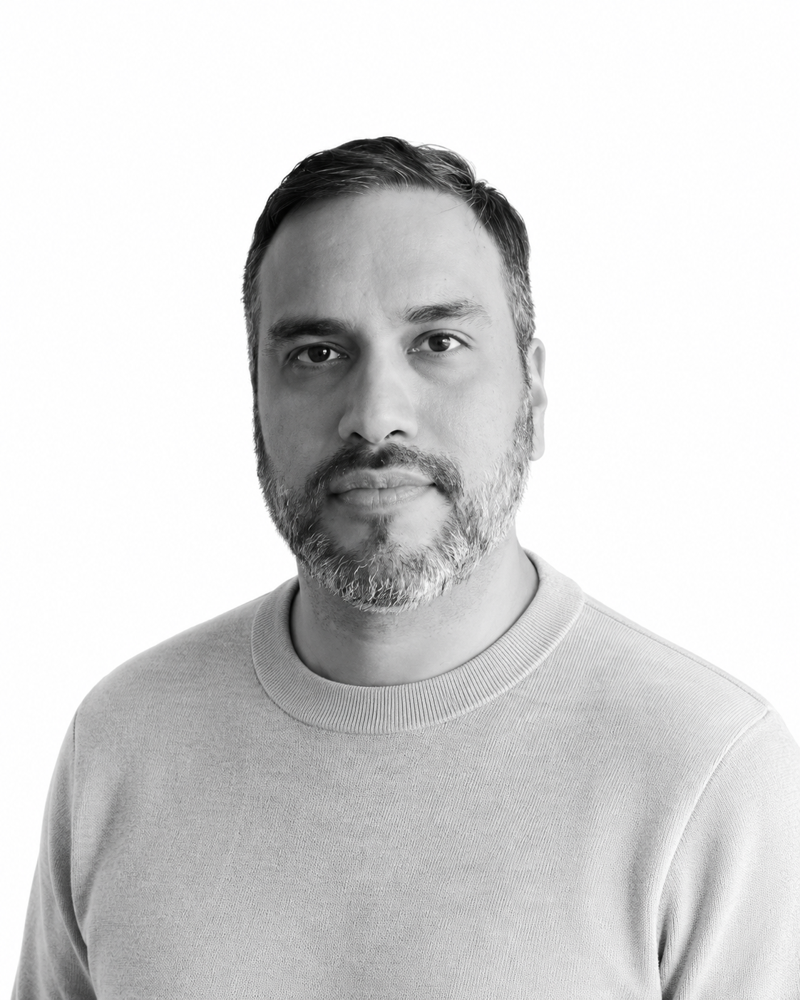

Pongo la economía al servicio de lo que importa: mercados justos, un ambiente sano, mejores políticas públicas.

Economista con más de una década en el sector público y privado, especializado en economía de la competencia, regulación ambiental y políticas públicas.
Actualmente abierto a nuevos roles en análisis regulatorio, consultoría económica o gestión de datos.
Más de una década construyendo análisis económico aplicado en regulación, competencia y política pública.
Analista Económico en OEFA
Organismo de Evaluación y Fiscalización Ambiental — el regulador ambiental del Perú, a cargo de fiscalizar y sancionar incumplimientos ambientales.
- Revisé la idoneidad económica en los procedimientos administrativos sancionadores (PAS) de aproximadamente 200 expedientes.
- Participé en la mejora de la metodología de cálculo de multas de OEFA.
- Desarrollé herramientas computacionales que automatizaron 8 procesos
1 / 1 de la dirección.
En corto→8 procesos automatizados, con reducciones de hasta 90% en horas-hombre en algunos casos.
Consultor Económico en Estudio Muñiz
Una de las principales firmas legales del Perú, en su área de competencia y regulación.
- Realicé estudios de mercado y evaluación de condiciones de competencia en 5 mercados, que apoyaron decisiones de alto nivel en fusiones y concentraciones.
- Simulé 6 escenarios de multas para dos casos de libre competencia y protección al consumidor.
- Asesoré a equipos legales y directivos en la interpretación económica de escenarios sancionadores y de competencia.
En corto→5 mercados analizados y 6 escenarios de multas simulados para operaciones de M&A y libre competencia.
Consultor Económico en INDECOPI
Autoridad de competencia y protección al consumidor del Perú.
- Elaboré una abogacía de competencia y analicé las condiciones de competencia del mercado de transporte fluvial de mercancías del Perú.
- Diseñé y desarrollé entrevistas a múltiples actores de los mercados investigados para recabar información precisa y relevante.
Analista Económico en INDECOPI
Secretaría Técnica de la Comisión de Defensa de la Libre Competencia.
- Investigué con análisis económico más de 10 casos de infracciones a la ley de libre competencia del Perú.
- Analicé condiciones de competencia de más de 5 mercados peruanos.
- Colaboré en el análisis económico de la modificación de la ley de libre competencia y su modificatoria de 2015.
En corto→10+ casos de libre competencia investigados y soporte económico a la reforma de la ley.
Analista Económico en MTC
Ministerio de Transportes y Comunicaciones del Perú.
- Analicé la idoneidad de proyectos de política económica en el sector de transportes y comunicaciones.
- Desarrollé informes económicos sobre el estado socio-económico de ciudades del Perú para priorizar proyectos viales.
- Elaboré un estudio econométrico con información primaria sobre la carretera central y su impacto en los costos logísticos de la macrorregión centro.
Practicante Profesional en OSINERGMIN
Regulador de la inversión en energía y minería del Perú.
- Actualicé los informes sectoriales de Electricidad que publica Osinergmin.
- Realicé recomendaciones sobre cálculos de multas para el sector electricidad.
Asistente de Investigación en PUCP · CISEPA
Centro de Investigaciones Sociológicas, Económicas, Políticas y Antropológicas de la PUCP.
- Realicé evaluaciones de impacto en distintos proyectos de investigación del CISEPA.
- Elaboré proyectos de investigación para financiamiento nacional e internacional (CIES, USAID, IDRC, entre otros).
Especialización en Fiscalización Ambiental según OEFA (120 h)
ENCAP — Escuela Nacional de Capacitación y Actualización Profesional.
M.A. Gobernabilidad, Desarrollo y Políticas Públicas
IDS, University of Sussex · Reino Unido.
Tesis→«El camino hacia la Ley Marco de Cambio Climático y los conflictos ambientales en Perú».
Licenciatura en Economía
Pontificia Universidad Católica del Perú.
Bachiller en Ciencias Sociales — mención en Economía
Pontificia Universidad Católica del Perú.
Análisis económico
Diseño y evaluación de multas administrativas · Economía industrial y competencia (IHH, mercado relevante) · Econometría aplicada · Esquemas regulatorios e incentivos.
Análisis ambiental
Economía de la regulación ambiental · Evaluación de incumplimientos · Costos de adecuación · Valoración económica de impactos y servicios ambientales · Metodologías de sanciones.
Economía política
Stakeholder analysis en contextos regulatorios · Análisis situacional y de gobernanza · Economía política de la regulación.
Programación
RStataGoogle Apps ScriptVBA (Excel)LaTeX